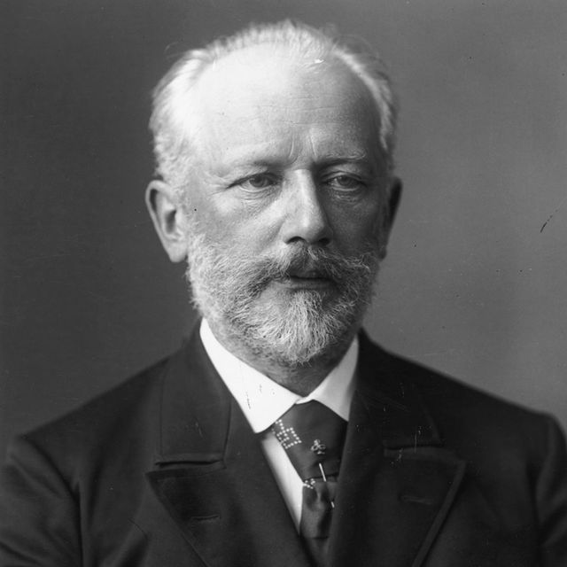

The Romantic Era of music was the successor of the Classical Era. It was
known for deviating from the classical "Sonnota-Allegra" form and other msuical
structures, focusing on expressing intense emotions.

Tchaikovsky and the Romantic Era
Early Life of Tchaikovsky
Born on May 7, 1840, in Votkinsk, Russia.
Studied music at the Saint Petersburg Conservatory.
Early influences included Russian folk music and Western European classical compositions.
Key Compositions by Tchaikovsky
Swan Lake (1876)
1812 Overture (1880)
The Nutcracker (1892)
Patronage by Nadezhda von Meck
Patroness from 1877 to 1890.
Stipulation of no in-person meetings to focus on the music.
Financial support allowed Tchaikovsky to create some of his most renowned works.
Romantic Era Characteristics
Emphasis on emotion, imagination, and individual expression.
Interest in national identity and folklore.
Exploration of exotic themes and the supernatural.